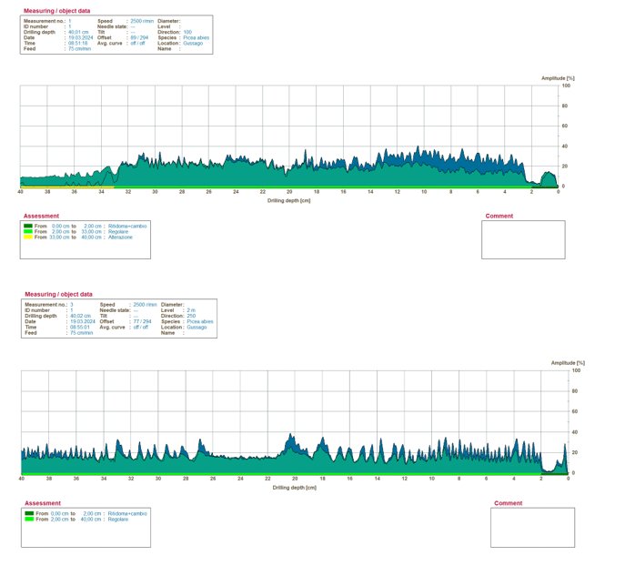
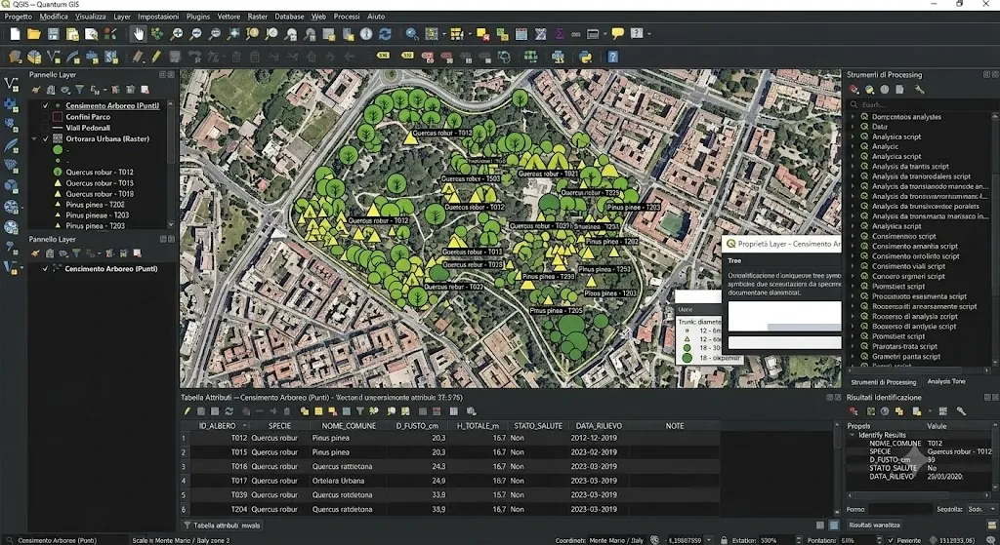
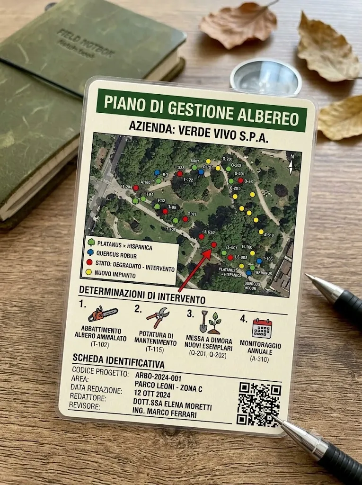
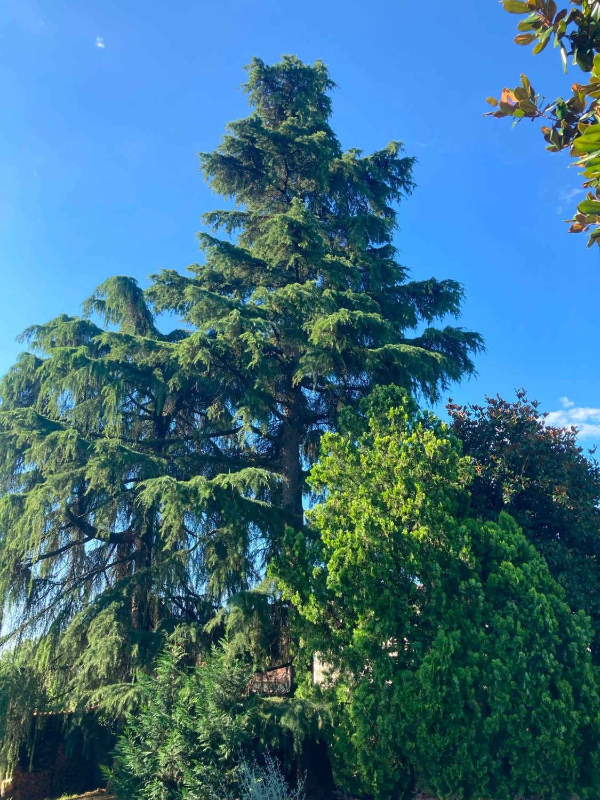
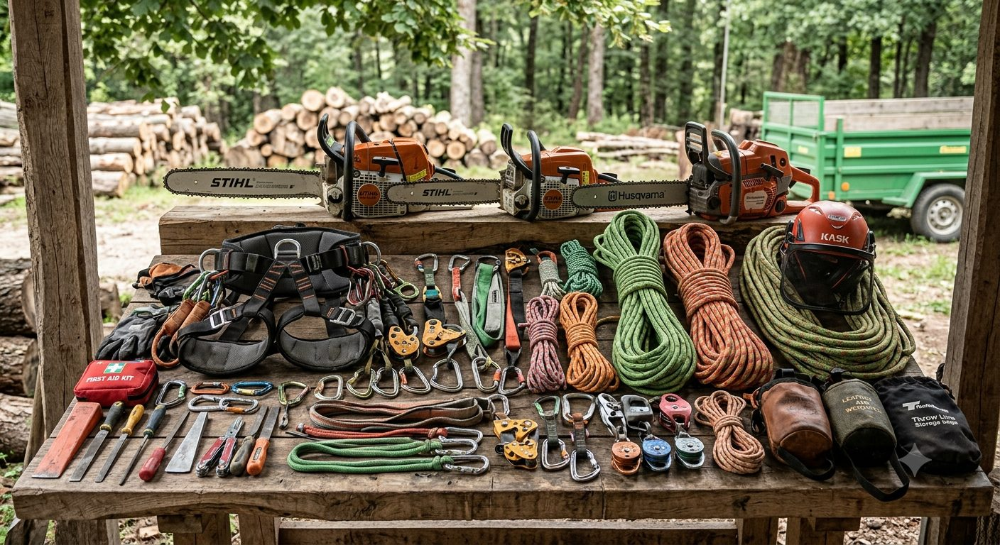
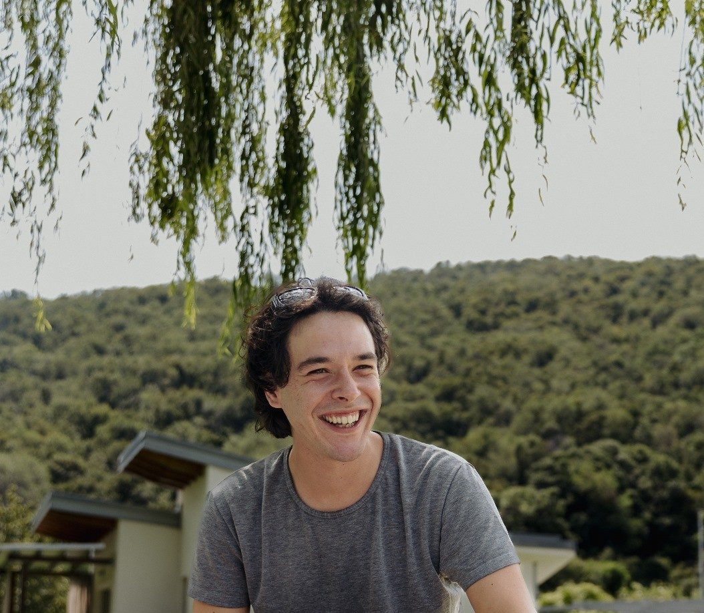

Valutazioni di stabilità (VTA), perizie con valore legale, censimenti e cura degli alberi sul Sebino bresciano.
Seguo privati, enti pubblici e amministratori del Sebino bresciano: perizie e relazioni agronomiche, analisi di stabilità (VTA) e censimenti del verde, con il rigore della documentazione tecnica.
Proprietari di case, ville e parchi: perizie e relazioni di stabilità, analisi VTA e gestione degli alberi, da un singolo esemplare all'intero giardino.
Comuni e amministrazioni: censimenti del verde, analisi di stabilità (VTA) e perizie per la sicurezza e la gestione del patrimonio arboreo pubblico.
Amministratori di condominio e imprese del verde: perizie di stabilità, documentazione e supporto tecnico per gestire e tutelarsi.
Redigo perizie e relazioni tecniche con valore legale: documenti firmati che fanno fede davanti ad assicurazioni, enti e in sede di contenzioso.

Perizia formale di stabilità secondo protocollo internazionale: assegno la Classe di Propensione al Cedimento (A–D) e, per quella pianta, rispondo con la mia assicurazione professionale.

Mappatura e schedatura di ogni esemplare: specie, dimensioni, stato fitosanitario e priorità d'intervento, in un archivio digitale consultabile.

Relazioni tecniche per vincoli paesaggistici, contenziosi, compravendite, danni e pratiche autorizzative comunali.

Programma pluriennale di potature, monitoraggi e interventi: spese pianificate, alberi più sani, meno emergenze impreviste.
Ricorrente
Consulenza per esemplari tutelati: obblighi di legge, segnalazioni, conservazione e gestione degli alberi monumentali.
Tutela
Interventi in quota in tree climbing e potature di formazione e risanamento, eseguiti secondo la diagnosi — non a caso.
Chi redige la perizia coordina anche l'intervento, eseguito con una squadra specializzata: nessun passaggio di mano, nessun fraintendimento.
Dove serve, indagini strumentali — resistografo, tomografo sonico, prove di trazione — non impressioni a occhio: dati oggettivi che reggono davanti a enti, assicurazioni e tecnici.
Consegno documenti digitali navigabili pianta per pianta, con mappa e foto: ritrovi tutto in pochi clic, anche fra anni.
Dalla prima visita al piano pluriennale, segui una sola persona che conosce il tuo parco e ne risponde nel tempo.
Iseo, Sarnico, Sale Marasino, Marone, Pisogne e i comuni limitrofi del Sebino bresciano.

Luigi Arici · Albero FacileDottore Agronomo iscritto all'Ordine dei Dottori Agronomi e Forestali di Brescia, specializzato nella cura e gestione del verde. Il mio lavoro è soprattutto diagnosi e documentazione: perizie e relazioni agronomiche, analisi di stabilità (VTA) e censimenti del verde.
Affianco privati, enti pubblici e amministratori nella valutazione e nella gestione del loro patrimonio arboreo. Gli interventi sulle piante — potature, messa in sicurezza, abbattimenti controllati — li realizzo con una squadra specializzata, così diagnosi ed esecuzione restano coordinate. L'obiettivo resta sempre lo stesso: documentare con rigore e, dove possibile, curare l'albero invece di eliminarlo.
ParliamoneRaccontami la tua proprietà sul Lago d'Iseo: in base al numero di piante e all'obiettivo ti propongo il servizio giusto e un preventivo chiaro.